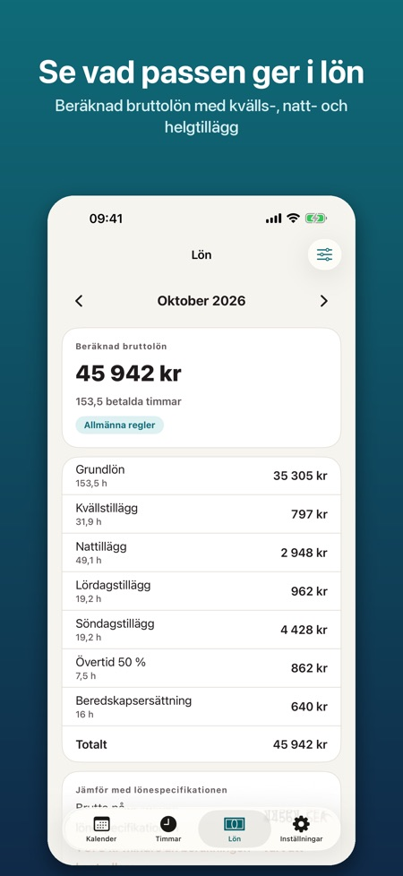
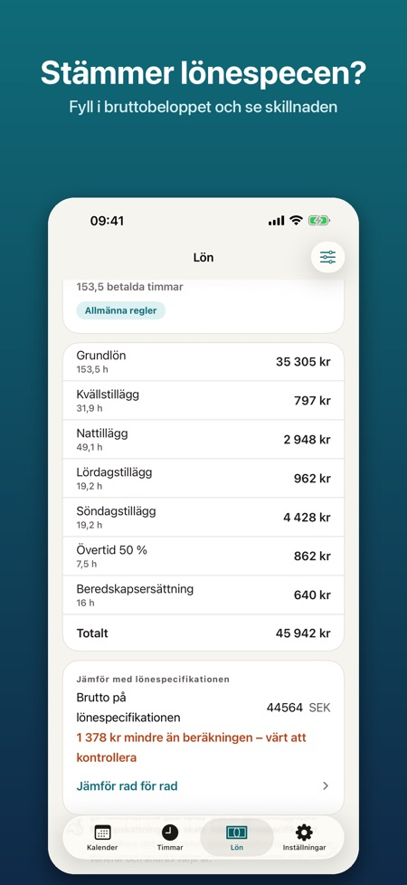
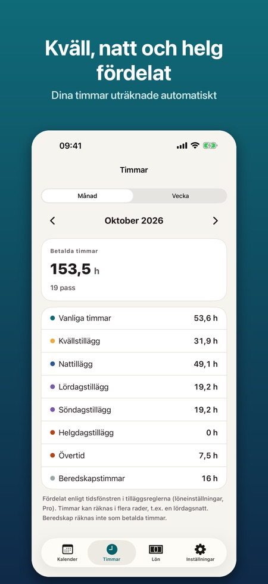

Pass, tillägg och timmar. Lägg in din turlista på sekunder och se timmarna fördelade på kväll, natt, helg och helgdag. Med Pro: beräknad bruttolön med tillägg, så du kan kontrollera lönespecen.



Appen för dig som jobbar i skift: sjukskötare, närvårdare, polis, handel, hotell och restaurang, lager och studerande med deltidsjobb. Planera dina pass, se dina timmar och kontrollera att lönespecifikationen stämmer.
KALENDER OCH TURLISTA
• Egna passtyper med färg, start- och sluttid och obetald rast (dag, kväll, natt, långpass, beredskap, ledig)
• Månads- och veckovy: välj ett pass och tryck på dagarna för att lägga in det
• Turlista på 1–8 veckor, inlagd upp till två år framåt
• Kopiera en vecka, byt pass mellan två dagar, lägg till anteckningar och övertid
• Helgdagar i Finland, Norge och Danmark räknas ut i appen (även påsk, Kristi himmelsfärd, midsommar och alla helgons dag)
• Påminnelse före passet
TIMMAR
• Timmar per vecka och månad: vanliga timmar, kväll, natt, lördag, söndag, helgdag, övertid och beredskap
• Pass över midnatt och övergång till sommartid/vintertid räknas rätt
PRO
• Beräknad bruttolön per månad med en specifikation du kan jämföra med lönespecifikationen
• Fyll i bruttobeloppet från lönespecifikationen och se skillnaden mot beräkningen
• Timlön eller månadslön och tillägg du själv ställer in: euro per timme eller % av timlönen, med tidsfönster och veckodagar
• Övertid 50 % och 100 %, per dag eller efter ett antal timmar per pass
• Mallar med namnen på tilläggen i vanliga avtal (Sote-avtalet, KVTES, KS och Spekter i Norge, regioner och kommuner i Danmark). Satserna är inte ifyllda: du fyller i siffrorna från ditt eget avtal
• Export till Apple Kalender, som .ics-fil eller som bild
• Widget med nästa pass och timmar denna månad
Pro finns som årsprenumeration eller som engångsköp för alltid. Årsprenumerationen förnyas automatiskt tills du säger upp den i Apple-ID-inställningarna senast 24 timmar innan perioden går ut.
Inget konto, ingen reklam. Allt sparas i telefonen och fungerar utan internet.
Lönen är en uppskattning före skatt, inte en lönespecifikation. Appen är oberoende och inte knuten till någon arbetsgivare, fackförening, arbetsgivarorganisation eller myndighet.